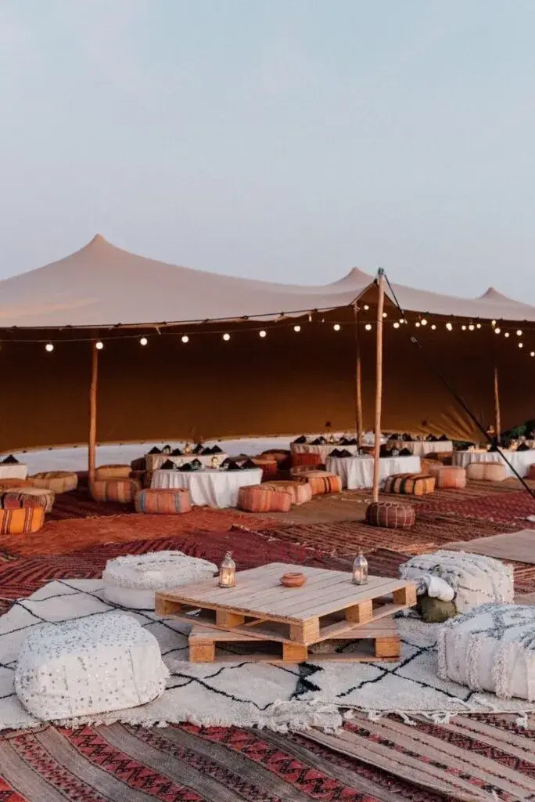
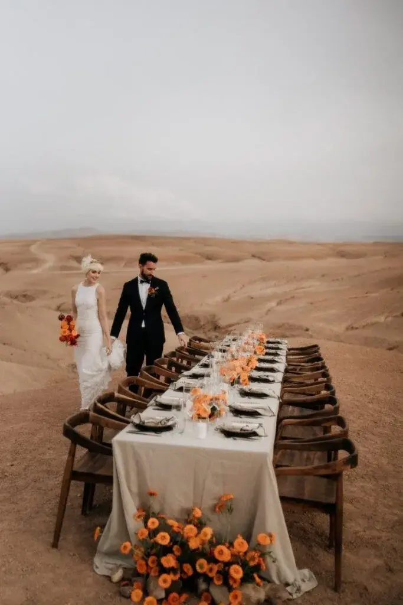

Envie d’un mariage intime à l’étranger ? Découvrez l’ Elopement au Maroc : paysages de rêve, traditions locales et conseils pour organiser votre union magique.
Se marier est déjà un moment unique dans une vie, mais le vivre loin du tumulte et des contraintes d’un grand mariage transforme cette journée en véritable aventure. C’est exactement ce que propose l’elopement au Maroc. Un mariage intime, en petit comité ou simplement à deux, dans un décor de rêve, mêlant authenticité, magie et culture.
Imaginez : une cérémonie face aux dunes du désert d’Agafay, un dîner sous les étoiles dans un riad de Marrakech, ou une déclaration d’amour sur la plage d’Essaouira. Le Maroc séduit de plus en plus de couples à la recherche d’un mariage intime à l’étranger, offrant la combinaison parfaite entre paysages spectaculaires, traditions locales et organisation flexible.
Elopement : une nouvelle façon de se marier

L’elopement n’est pas juste un mariage “réduit”. Il s’agit de réinventer le mariage autour de l’essentiel : vous deux, votre histoire, vos émotions. Finies les longues listes d’invités et les contraintes interminables. Ce type de mariage met l’accent sur la spontanéité et l’authenticité.
Choisir un elopement au Maroc, c’est faire le choix de la liberté. Chaque détail peut être personnalisé, chaque moment peut être vécu pleinement sans stress. Le Maroc offre cette flexibilité tout en garantissant un cadre somptueux, parfait pour immortaliser la journée avec des photographies et vidéos dignes d’un film.
Pourquoi choisir le Maroc pour son elopement ?
Le Maroc combine tout ce que recherchent les couples pour un mariage à l’étranger : proximité avec l’Europe, diversité des paysages et richesse culturelle. En quelques heures d’avion depuis la France ou l’Espagne, vous vous retrouvez dans un monde où chaque coin de rue, chaque dune et chaque palais respire la magie.
Les contrastes sont saisissants. Au nord, des montagnes majestueuses qui offrent un cadre naturel incroyable pour un mariage intime. À Marrakech, des riads secrets et des jardins luxuriants créent une atmosphère romantique et raffinée. Sur la côte Atlantique, Essaouira séduit avec ses ruelles colorées et ses plages balayées par le vent. Enfin, le désert, que ce soit l’Agafay ou le Sahara, offre un panorama à couper le souffle, idéal pour des photos et des vidéos uniques.
Mais au-delà des paysages, c’est l’accueil et la chaleur des habitants qui font la différence. Les couples qui choisissent un elopement au Maroc apprécient l’hospitalité et la bienveillance des prestataires locaux, des artisans aux wedding planners spécialisés dans les mariages à l’étranger.


Des lieux de rêve pour un mariage intime
Se marier au Maroc, c’est avoir l’embarras du choix. À Marrakech, les riads offrent un mélange unique de luxe et d’authenticité. Imaginez une cérémonie dans un patio fleuri, avec des lanternes suspendues et un doux parfum d’oranger flottant dans l’air. Les médinas colorées offrent un décor urbain romantique, parfait pour des clichés dynamiques et pleins de vie.
Si vous rêvez d’un cadre plus sauvage, le désert d’Agafay est parfait pour un mariage intime au Maroc. Les dunes dorées, les ciels infinis et le calme absolu permettent une immersion totale dans votre histoire. Le coucher de soleil crée une atmosphère irréelle, où chaque émotion est amplifiée et chaque regard devient mémorable.
Pour les amoureux de la mer, Essaouira séduit avec ses plages ventées et ses ruelles bohèmes. Et pour ceux qui veulent mêler nature et intimité, les montagnes de l’Atlas offrent des panoramas majestueux, parfaits pour un mariage minimaliste mais élégant.
Entre traditions et modernité
L’un des grands atouts d’un elopement au Maroc est la possibilité de mixer modernité et traditions. Vous pouvez choisir une cérémonie symbolique occidentale ou intégrer quelques touches locales pour enrichir votre expérience. Les caftans, le henné pour la mariée, ou encore une entrée en musique à la manière d’une zaffa sont autant de détails qui ajoutent une authenticité précieuse à votre mariage.
La gastronomie marocaine est également un point fort. Un dîner intime peut devenir une expérience gastronomique mémorable avec pastilla, tajine, méchoui et pâtisseries locales. Ces touches authentiques rendent votre mariage unique, tout en respectant votre vision personnelle de l’elopement.
Organisation pratique d’un elopement au Maroc
Même un mariage intime demande un minimum d’organisation. Faire appel à un wedding planner Maroc spécialisé dans les elopements permet de profiter pleinement de votre journée sans stress. Le rôle du planner : choisir le lieu, coordonner les prestataires, gérer la logistique et parfois même assister à la cérémonie pour s’assurer que tout se déroule parfaitement.
Pour la plupart des couples, l’elopement au Maroc se déroule sous forme symbolique. Les formalités légales peuvent se régler dans le pays d’origine, ce qui simplifie grandement le processus. Il est conseillé de choisir la meilleure saison pour profiter du climat idéal, généralement entre avril et juin ou septembre et octobre, afin d’éviter la chaleur extrême de l’été ou les pluies hivernales.
Photographes et vidéastes spécialisés dans les elopements deviennent vos alliés indispensables. Avec eux, chaque instant, des préparatifs au coucher du soleil, est immortalisé avec naturel et émotion.
L’expérience unique d’un elopement
Loin de la logistique d’un mariage traditionnel, l’elopement au Maroc devient une véritable aventure. Vous marchez main dans la main dans les souks de Marrakech, respirez l’air frais du désert, partagez un thé à la menthe avec vos proches dans un riad, ou profitez du silence absolu des dunes. Chaque moment devient précieux, chaque regard est capturé dans sa spontanéité.
C’est ce qui rend ce type de mariage si différent. Il ne s’agit pas seulement d’une cérémonie, mais d’un voyage, d’une parenthèse hors du temps. Les souvenirs que vous en rapportez, que ce soit à travers des photos, des vidéos ou simplement votre mémoire, sont d’une intensité inégalée.
Conseils pour réussir son elopement au Maroc
Pour que votre mariage intime se déroule parfaitement, quelques conseils sont essentiels. D’abord, définir l’ambiance souhaitée : bohème, chic, minimaliste ou traditionnelle. Ensuite, choisir des prestataires expérimentés dans les elopements à l’étranger : photographe, vidéaste, décorateur et wedding planner.
Il est également crucial de planifier la logistique à l’avance : transports, logement, météo, et éventuellement un petit comité d’invités. Même si l’elopement est intime, préparer chaque détail permet de profiter pleinement de la journée sans imprévus. Enfin, laissez-vous porter par le moment et profitez de chaque émotion, car c’est exactement ce qui rend un mariage au Maroc inoubliable.

En bref,
Un elopement au Maroc n’est pas seulement un mariage intime à l’étranger, c’est une expérience unique. Entre paysages à couper le souffle, traditions marocaines et liberté totale d’organisation, chaque couple peut créer un mariage sur mesure, profondément personnel et magique.
Choisir le Maroc, c’est choisir l’aventure, la beauté et l’authenticité. Que ce soit dans un riad à Marrakech, face au désert d’Agafay, sur la plage d’Essaouira ou dans les montagnes de l’Atlas, votre mariage devient un souvenir gravé pour toujours, riche en émotions et en magie.
Alors si vous rêvez d’un mariage intime au Maroc, laissez-vous porter par cette destination qui conjugue intimité, aventure et élégance, et faites de votre elopement un moment unique et inoubliable.
Lovely Day Event c'est plusieurs types de prestations
L'organisation de mariage
Je vais intervenir sur toutes les étapes de vos préparatifs et vous guider dans vos choix. Je suis force de proposition pour que votre mariage ne ressemble qu’à vous.
Décoration de mariage
Créative et passionnée, je suis certifiée Wedding Designer et je conçois une ambiance scénographique qui correspond au thème de votre mariage.
Coordination le jour J
Je serai le chef d’orchestre pour gérer les différents prestataires, la mise en place de votre décoration et le déroulement de cette belle journée.